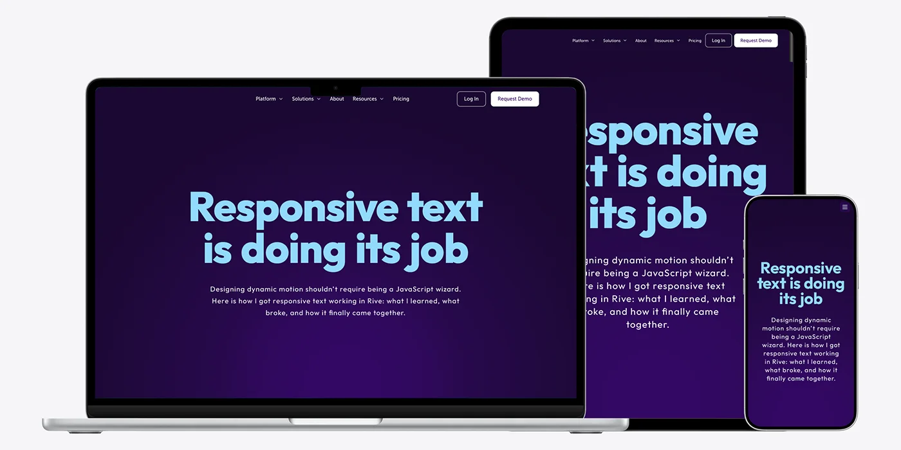

If you have ever resized a screen and watched your beautiful typography slowly collapse into unreadable dust, you already know the problem. Scaling text linearly works in theory, but real layouts are not linear. Designers do not think in percentages. We think in breakpoints.
On the web, CSS solved this years ago. When the screen gets smaller, layouts change. Font sizes change. Line lengths change. Things adapt instead of shrinking.
This article is about recreating that same mental model inside Rive.
Not by fighting the tool. Not by over engineering. Just by wiring the right signals together.
The Problem With Scaling Everything
Before landing on this approach, I tried two common solutions that Rive users often reach for.
The first one is the easy method. You set your text to use the Fit overflow mode and let the artboard size handle the rest. This works fine for simple cases, but it scales everything evenly. When the artboard gets too small, the text gets too small. No decisions are being made.
The second one is the super custom method. You connect a joystick to the artboard width and drive text size and spacing manually. This gives you a lot of control, and for some projects it is the right call. But it is still linear. The text keeps shrinking as the canvas shrinks.
Neither approach behaves like CSS.
What I wanted was this. At certain widths, the layout should switch. Font sizes should jump. Line breaks should change. Just like breakpoints on the web.
Thinking in Breakpoints Instead of Scale
The breakthrough was realizing that Rive does not need to know how big the canvas is. It needs to know how wide the screen is.
That distinction matters.
Canvas size can change because of containers, padding, or layout quirks. Window width is stable. It is what designers already use when defining breakpoints.
So instead of binding the artboard size into Rive, we bind the browser window width into a View Model number.
From there, Rive does what it does best. It reacts to state.
Sending the Window Width Into Rive
On the JavaScript side, the setup is straightforward. We read the current window width and pass it into a View Model number called num.
Here is the core idea simplified.
const windowWidth = window.innerWidth;
numProp.value = windowWidth;
That value updates whenever the window resizes. Rive receives it instantly.
At this point, Rive knows exactly how wide the screen is.

Letting Rive Decide the Layout
Inside Rive, the real work happens.
Instead of one timeline that scales forever, we create four timelines:
- xLarge for screens above 1200px
- Large for screens between 741px and 1199px
- Medium for screens between 531px and 740px
- Small for screens below 530px
Each timeline has its own layout. Font sizes, line breaks, spacing, alignment. Everything is intentional.
In the State Machine, we use an Any State with conditional transitions based on the View Model number.
If num is greater than or less than certain values, the State Machine switches timelines.
This is the key mental shift.
You are no longer animating size. You are choosing layouts.
Why This Feels Like CSS
This approach feels familiar because it behaves like CSS media queries.
- The browser tells you how wide the screen is
- The design system defines what should happen at each width
- Layouts switch instead of shrinking
Designers can reason about this without touching code. Developers only wire the signal once.
After that, everything lives in the Rive file.
Handling Aspect Ratios Across Devices
Responsive text alone is not enough. Aspect ratio matters too.
In this setup, the canvas aspect ratio changes depending on the window width. Desktop layouts use a wide ratio. Mobile layouts use a more compact one.
That logic stays in JavaScript, because it is about rendering space, not design intent.
Rive receives the width. The canvas adapts its shape. The State Machine picks the correct layout.
Each layer does its own job.
What This Unlocks for Designers
Once this system is in place, designers gain real freedom.
- You can design layouts, not compromises
- You can control typography at each breakpoint
- You can localize text without worrying about scaling
- You can iterate without asking for code changes
The animation behaves like a responsive component, not a static asset.
Why This Approach Scales Long Term
This is not a hack. It is a pattern.
It works for headers, heroes, UI animations, and entire responsive scenes. It scales across teams because responsibilities are clear.
JavaScript provides the signal.
Rive owns the decisions.
And nobody loses their mind resizing text ever again.
Final Code Block
Here is the complete script ready to paste into your project.
<script>
const canvas = document.getElementById("riveCanvas");
// Initialize a new Rive instance with configuration
const r = new rive.Rive({
src: "your_rive_file.riv",
canvas: canvas,
autoplay: true,
autoBind: true,
loadRiveFile: true,
artboard: "Artboard",
stateMachines: "State Machine 1",
useDataBinding: true,
onLoad: () => {
const vmi = r.viewModelInstance;
if (!vmi) return;
// View Model number used for breakpoints
const widthProp = vmi.number("num");
if (!widthProp) return;
function updateLayout() {
const windowWidth = window.innerWidth;
// Send window width into Rive
widthProp.value = windowWidth;
// Optional: control aspect ratio here if needed
const aspectRatio =
windowWidth >= 741
? 1076 / 418 // desktop
: 531 / 428; // mobile
const parentWidth = canvas.parentElement.clientWidth;
canvas.style.width = parentWidth + "px";
canvas.style.height = (parentWidth / aspectRatio) + "px";
r.resizeDrawingSurfaceToCanvas();
}
updateLayout();
let resizeTimeout;
window.addEventListener("resize", () => {
clearTimeout(resizeTimeout);
resizeTimeout = setTimeout(updateLayout, 120);
});
}
});
</script>
Closing Thoughts
Responsive motion is no longer optional. Interfaces are expected to feel alive across every screen size, and that includes typography inside animations.
Responsive text is not really about math. It is about intent. When typography only scales up and down, it quickly loses hierarchy and rhythm. What feels right on a large screen often falls apart on a small one. That is why the web moved to breakpoints in the first place.
By passing the window width into Rive and letting the State Machine choose the right layout, you regain that same level of control. Each breakpoint becomes a design decision, not a side effect of scaling.
If responsive text in motion tools has ever felt harder than it should be, this approach is a reminder that it does not have to. With clear boundaries between layout logic and design intent, responsive motion starts to feel natural again.